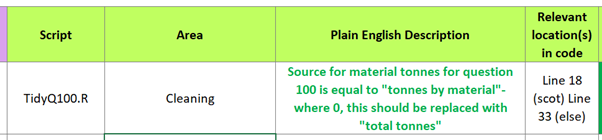
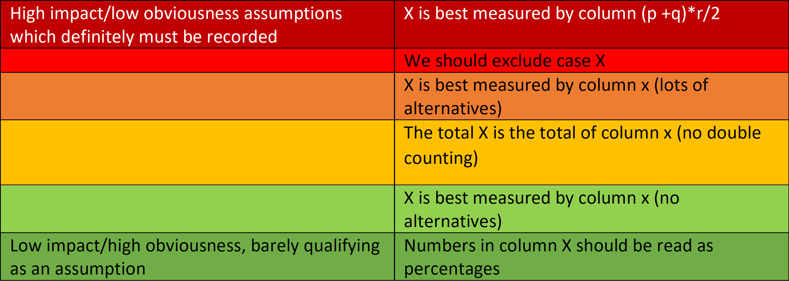

Follow these instructions to identify and record assumptions, for more guidance on what exactly is an assumption, scroll to the background section below.
Identify an assumption:
Go through your code and identify modelling choices you have made- ask yourself the following questions:
Are there other choices you could have made?
Would changing your choice affect the final number?
Can you imagine your choice leading to the wrong number?
Can you justify your choice?
If you answered ‘Yes’ to any two of the above questions, your modelling decision is an assumption.
Record your assumption in plain English, together with its location and approximate area in the code, in the “Assumptions Log” tab of the relevant QA Log:

Rate your assumption for Impact:
These are rated
You can assess this directly quantitatively (see step 5), but the following rules of thumb may be useful:
Rate your assumption for Quality:
These are rated
Again see step 5 for guidance.
Explain your choices of Impact and Quality RAG in the “Comments” box:
Impact:
Quality:
What constitutes assumption quality is a hard question, depending on the kind of assumption, and the level of impact. We should record:
A high impact assumption should be assessed thoroughly on all the above that are relevant. A lower impact assumption may require a less thorough assessment. The level of the assessment, as well as the outcome, remains a matter of judgement. The following rules of thumb may be useful however:
Save any code used to validate and or quantify the impact of the assumption, as well as any outputs:
Code should go in the documentation folder on github.
Outputs of this validation code can be pasted into the outputs tab of the spreadsheet
Include any links to other documentation e.g.
Transfer the records from steps 2-7 into your code:
Paste the following code snippet next to the relevant portion of code and edit to reflect the above. The location or area need not be included as a separate detail, as these are implied by location in the code. The description will need to be extended over multiple lines to contain all comments.
# Assumption: Title of assumption
# Quality: RED
# Impact: AMBER
# Detailed description
# on next line or many. If you can imagine testifying to a judicial review about why you made a modelling choice, then it’s an assumption.
As analysts, we make choices with every line of code. In some cases, these do not materially affect the output of the model: reformatting columns, for example, might make the code more user friendly, but shouldn’t change the output. But wherever a choice materially changes the output, whether that is a choice of column, a fix for missing values, or the use of a formula, that is an assumption, and we (that is Defra potentially long after you have been headhunted away by Google) need to be able to say why you made it.
Documenting assumptions completely can be quite an arduous task, and theoretically they represent half of how your code interfaces with the real world.
But assumptions come in a spectrum of importance:

…Of course, sometimes highly obvious assumptions can turn out to be wrong. I once heard of a pension fund who supplied all their eligible years data as “3.152” meaning “3 years, 152 days”. Understandably nobody using the data recorded the assumption that it was a decimal…